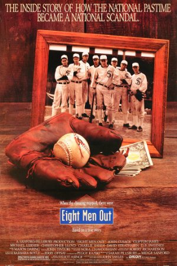
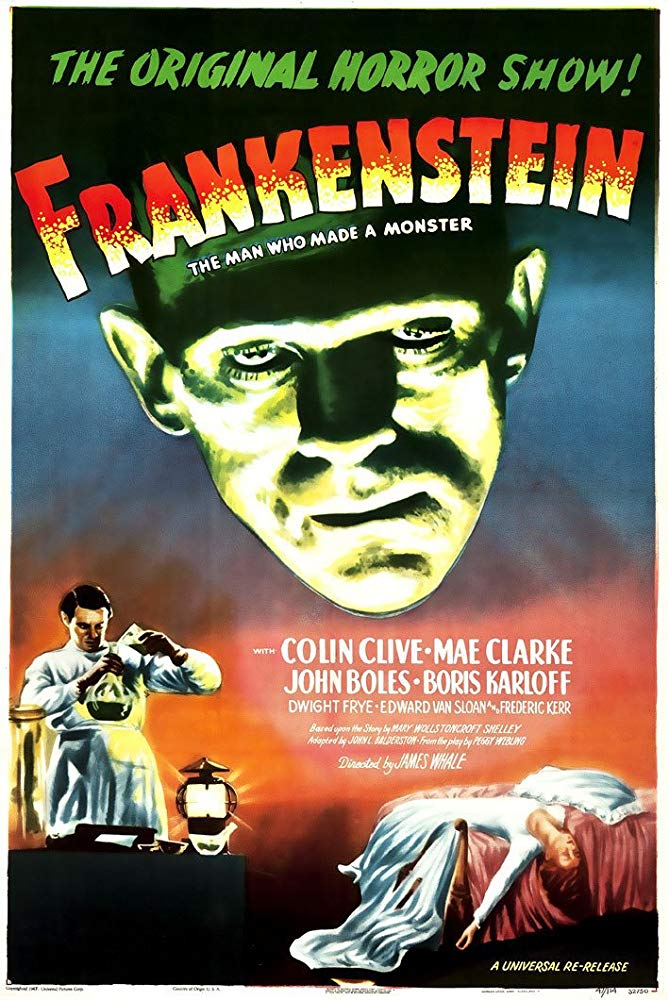
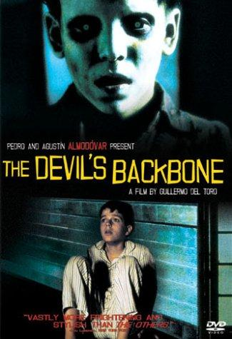
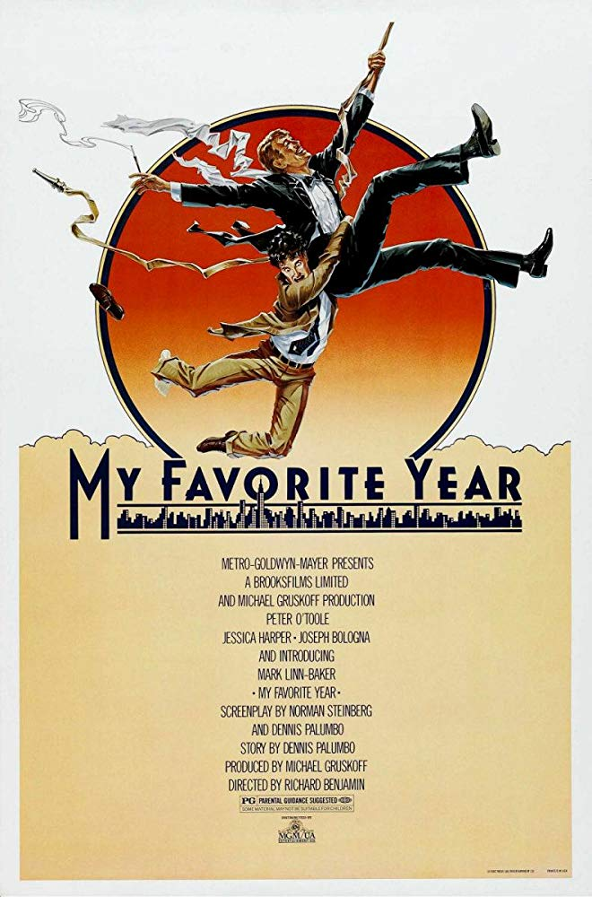
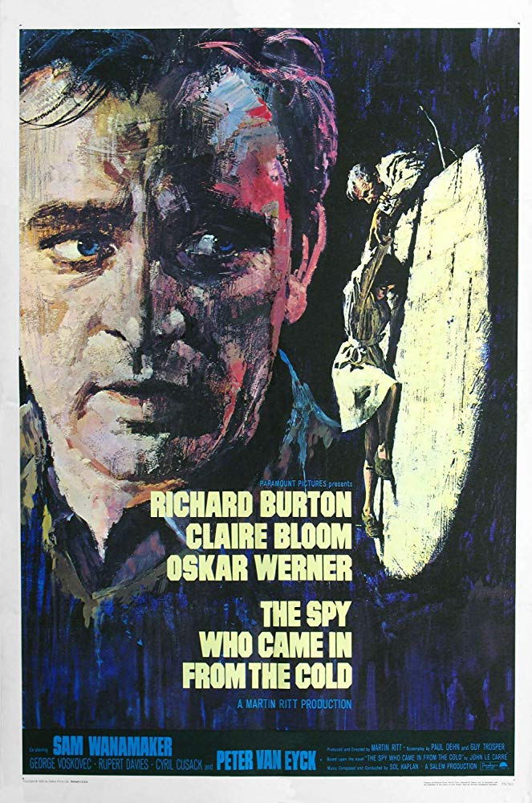
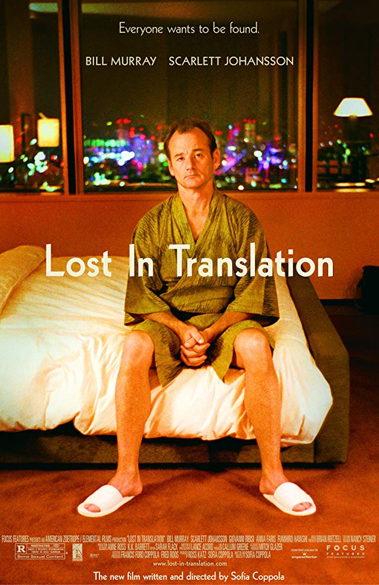
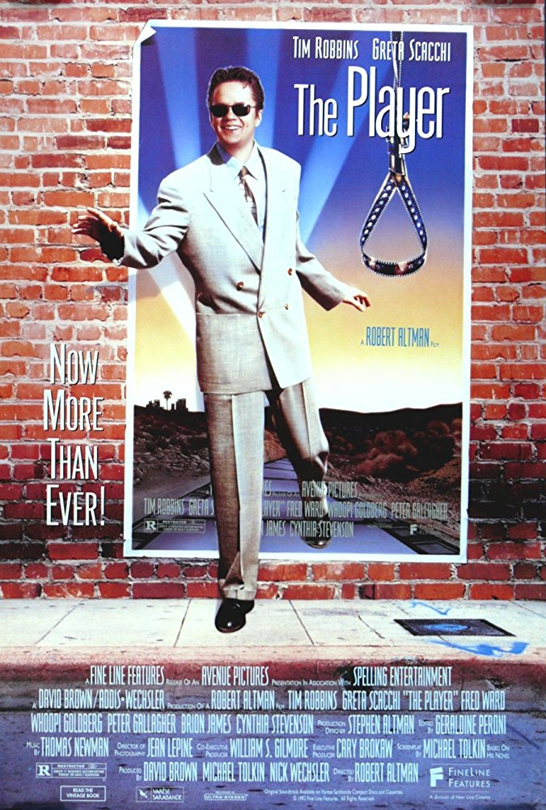
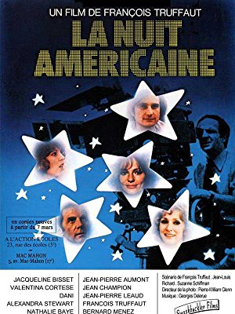
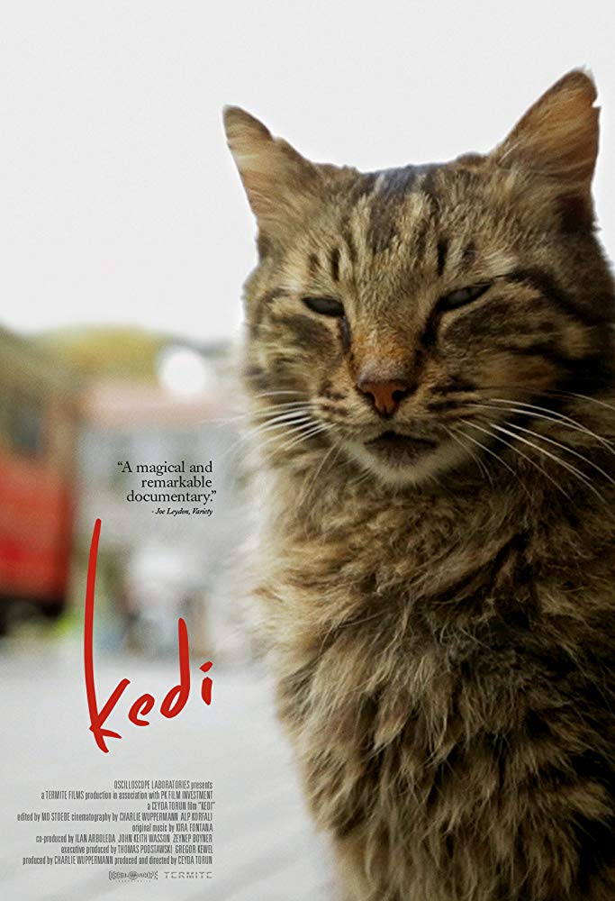

Season 56 (2024-2025)
-

Directed by John Sayles; Starring John Cusack, Clifton James, Michael Lerner, Christopher Lloyd
One of the greatest baseball teams in history and the odds-on favorite to win the 1919 World Series over the Cincinnati Reds, the Chicago White Sox appeared poised for victory. Undervalued and underpaid, eight team members were approached by a gambling syndicate to throw the series for more money than they would make winning.
*Noah Gittell, author of the recently-published book Baseball: The Movie, introduced the film and signed copies of his book. The film notes are an excerpt from the book.
Film Notes (Noah Gittell*): As shooting wrapped on Eight Men Out in the fall of 1987, several of its key actors came to the producers with a request. They wanted to keep their costumes, specifically those authentic 1919 Chicago White Sox uniforms in which they had lived out their dreams of being professional baseball players, if only for a few weeks. It's not uncommon for actors to keep their wardrobe, but the request was swiftly denied in this case. The reason given? The uniforms were promised to another production. The actors scoffed, certain that they were being lied to. There was just no chance another Black Sox movie was being made at that exact moment. They must have felt foolish when Field of Dreams came out two years later.
What is it about Shoeless Joe, anyway? He appears three times in the baseball movies of the 1980s, and never before or since. Why were the filmmakers of this era so fascinated with the 1919 Chicago White Sox, eight of whom were permanently banned from professional baseball for throwing the World Series? Specifically, why were they obsessed with Jackson? The Natural drew from his legend to tell the story of Roy Hobbs, who gets mixed up with gamblers but ultimately redeems all of baseball by doing the right thing in the end. Field of Dreams literally brings Shoeless Joe back to life. Then there's John Sayles' Eight Men Out, the most direct telling of the story of the Chicago "Black Sox." It's a true ensemble piece, with no single figure dominating the narrative. It probes the World Series from all sides: the players, journalists, gamblers, wives, owners, and fans, each with a different perspective on the historic scandal. But it ends on Jackson. He's disgraced by then, playing on a semi-pro team in Hoboken, New Jersey, under an assumed name. The final, sepia-toned shot is a freeze-frame of him looking almost directly into the camera, as if he had been the main character all along. Along with Jackie Robinson, he's one of the most central characters in all of baseball cinema. -

Directed by James Whale; Starring Colin Clive, Mae Clarke, Boris Karloff
In her novel, Mary Shelley referred to the creature Dr. Frankenstein fabricated from body parts as simply "the Monster". This film, which has influenced every horror film in its wake, brought to life a monster so iconic that its name has become confused with its creator and symbolic father.
Film Notes (Douglas Scott): If you were in the Bavarian Alps, on a snowy evening with four or five friends, what would you do if you were Mary Shelley, her husband Percy Bysshe Shelley, Lord Byron, and Byron's personal physician in 1818? Talking before a roaring fire, the group began to discuss the writing of stories. Mary suggested a story that involved the creation by a scientist of a human being. After a few hours of discussion, Mary went to her room and began to write.
At breakfast the next morning, she presented her friends with the first draft of a book she would call Frankenstein. Mary's friends were enthralled with the story they read. They appreciated the basic theme of the pursuit of knowledge: Dr. Frankenstein attempts to surge beyond human limits and access the secret of life, but discovers the dangers of seeking knowledge too quickly and too deeply.
On August 30th of this year 2024, Mary's Frankenstein celebrated the 206th anniversary of its publication. It still resonates with readers today. It is a seminal horror story. And the classic 1931 movie, loosely based on the book, retains the horror that Mary Shelley infused in her original story.
In the film, Dr. Henry Frankenstein and his assistant Fritz are putting the final touches on their creation — a human body. All they need is a brain.
Henry's former teacher, Dr. Waldman, shows his class the brain of a normal human, comparing it with the nefarious brain of a criminal. Henry sends Fritz to steal the healthy brain for their creation. Fritz accidentally damages the healthy brain and brings Henry the severely tainted one. But, they are ready to begin the experiment to create life. They invite Henry's girlfriend and others to witness what will happen when Henry and Fritz point the table skyward. Henry's creature gets an electrical charge from a storm raging overhead. The creature is brought to life!
Monsters in movies tend to fade in and out of our imagination. But, Frankenstein's monster is alive and ready to kill. He must be destroyed. How many and who will lose their lives? -

November 10, 2024Directed by Guillermo del Toro; Starring Marisa Paredes, Eduardo Noriega, Federico Luppi
The Devil's Backbone (El espinazo del diablo)
Mexico/Spain, 2001, 106 min, Color, R, Spanish w/subtitles
The world is full of monsters, full of ghosts. The scariest monsters are too often human. In this mournful ghost story set during the waning days of the Spanish Civil War, a boy whose father has been killed fighting for democracy is sent to a haunted orphanage.
Film Notes (Mark Van Hook): What is a ghost? A tragedy condemned to repeat itself time and again? An instant of pain, perhaps. Something dead that still seems to be alive. An emotion suspended in time. Like a blurred photograph. Like an insect trapped in amber.
So begins Guillermo del Toro's haunting (and haunted) fable The Devil's Backbone, his third feature and the one that marked a major leap forward in both his filmmaking and international acclaim. A ghost story set in a remote orphanage during the Spanish Civil War, the film explores themes that would define del Toro throughout his career: namely, the monsters that embody our deepest horrors, and the human monsters that are far worse.
The film opens with a stark image: a young boy lies dying, bleeding out from a head wound as another boy reacts in horror. How was he wounded? Was the other boy responsible? The film then flashes forward to the arrival of Carlos, a 12-year-old whose father has been killed in the war, as he is left to live at the orphanage and becomes acquainted with the other boys. Quickly he realizes they are not alone. A ghost haunts the orphanage, known to the others as "the one who sighs." Terrified at first, he soon comes to understand that the spirit is trying to communicate something vital to him, a message that may save his life – or end it.
Like his 2006 masterpiece Pan's Labyrinth, The Devil's Backbone is not subtle in showcasing del Toro's unique interest in the impact of war's horrors on children and in implicating the adults who fail to protect them. The film's true monster, when revealed, is shown to be as much of a creation of war as the bomb that lies, dormant, in the middle of the orphanage's courtyard. It may be adults who wage wars for ideology, revenge, or profit, but it is children who must bear the scars.
Scary, riveting, and deeply, profoundly sad, The Devil's Backbone is the work of a true modern master arriving at the height of his powers. -

Directed by Richard Benjamin; Starring Peter O'Toole, Mark Linn-Baker, Jessica Harper
When drunken, washed-up, swashbuckling star Alan Swann (a perfectly cast O'Toole) agrees to make an appearance on a live television program in 1950s New York, a junior writer and lifelong fan (Linn-Baker) is tasked with babysitting his charming but unruly charge. Mayhem, pratfalls, laughter, and fun ensue.
Film Notes (Doug Scott): What is your favorite year? Some people have more than a few; others have difficulty thinking of one, but not Benjy Stone (Mark-Linn Baker). For him, that year was unequivocally 1954 when he met his idol, Alan Swann (Peter O'Toole), a former swashbuckling movie star, now an over-the-hill womanizer with a drinking problem.
In 1954, Benjy worked as a junior comedy writer for the Comedy Cavalcade show. When King Kaiser (Joseph Bologna), the show's headliner, tries to kick the unreliable Swann off the show, Benjy defends his idol. Consequently, Benjy is assigned the near-impossible task of keeping Swann sober and guaranteeing that he shows up for the live telecast.
Along the way, Benjy and Swann share stories of their lives and their problems. Benjy has an overbearing mother and an unrequited love for the show's production assistant, K.C. Downing (Jessica Harper). Swann's myriad problems include an estranged daughter, a seeming inability to act responsibly, and his love of drink which leads to his unpredictability and unreliability.
Will Alan Swann make the telecast? Will he be reasonably sober? Will he be a hit or a flop? More importantly, will Swann find the courage to reconnect with his daughter? And what about Benjy? Will he win the heart of K.C. Downing? What makes 1954 Benjy's favorite year? Find out in this uproariously funny comedy and joyful ode to the early days of television. -

Directed by Martin Ritt; Starring Richard Burton, Oskar Werner, Claire Bloom
At the height of the Cold War, a spy (Burton) undertakes one final perilous mission in East Germany to flush out a mole in MI6, nicknamed the "Circus" by insiders. From the acclaimed best-seller by John le Carré, director Ritt captures a world where nothing is black and white; only seemingly endless shades of grey.
-

Directed by Sofia Coppola; Starring Bill Murray, Scarlett Johansson, Giovanni Ribisi
Two lonely, lost Americans adrift in Tokyo meet and forge an unlikely friendship. He is older; an actor whose career is on the skids. She is younger; a wife who has accompanied her husband on a photo shoot. Somehow, miraculously, they see each other, hear each other, get each other in this valentine to the wonders of chance friendships and the city of Tokyo itself.
-

Directed by Robert Altman; Starring Tim Robbins, Greta Scacchi, Fred Ward
A self-admitted Hollywood player himself, Altman casts a satirical insider's eye at the cutthroat corporate Hollywood world. From its audacious and renowned eight-minute opening tracking shot, through a constellation of stars in cameo roles to its upbeat Hollywood ending, his satire of the morally bereft studio exec remains funny, suspenseful, and hugely entertaining.
-

April 13, 2025Directed by François Truffaut; Starring Jacqueline Bisset, Valentina Cortese, Dani, Alexandra Stewart
Day for Night (La nuit américaine)
France/Italy, 1973, 115 min, Color/B&W, PG, French w/subtitles
Deriving its title from a term for shooting a nighttime scene in the daylight with a special filter, Day for Night follows a harried director (Truffaut) as he struggles to complete a flimsy melodrama. "A movie for people love movies" declares a tagline form an original poster. The film delivers on that promise.
Read Roger Ebert's review of Day for Night at Great Movies. -

Directed by Ceyda Torun; Starring Yaman Barlas, Sari, Arzu Göl
Torun's documentary provides a well-needed reminder that human beings are capable of love, warmth, solicitude and kindness. While the title is Kedi (Turkish for cats) and the stars are feline, the supporting players are humans who affectionately care for these street cats of Istanbul.
-
Directed by Questlove; Starring Stevie Wonder, Nina Simone, Sly and the Family Stone
In the summer of '69, for six consecutive Sundays and a mere one hundred miles from Woodstock, the Harlem Cultural Festival hosted an epic event that celebrated Black history, culture, fashion, and music with headliners such as Mahalia Jackson, B.B. King, Max Roach, The Staple Singers, and the 5th Dimension. Thompson rescued, edited, and assembled a hitherto lost-to-history cache of festival archival footage that revives a milestone moment.
-
 Directed by Spike Lee; Starring John David Washington, Adam Driver, Laura Harrier
Directed by Spike Lee; Starring John David Washington, Adam Driver, Laura Harrier
The hoary cliché "truth is stranger than fiction" raises its head once again with this biographical crime story of a Black detective (Washington) and his Jewish partner (Driver) infiltrating the Colorado Springs KKK in the 1970s. Timely, provocative, funny, devastating, wry, blunt, and brilliant, BlacKkKlansman finds one of America's great filmmakers at the top of his game.
-
August 10, 2025
(to be announced)
Trust us, it will be worth the wait!